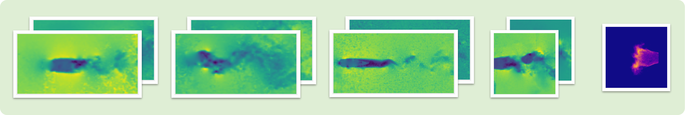

RealPDEBench:
Bridging the Sim-to-Real Gap
The first scientific ML benchmark with paired real-world and simulated data for complex physical systems
Real-World Experiments
CFD Simulations

Benchmark Datasets
Five Physical Systems
Real Experiments + CFD Simulations
FSI
Two-way fluid–structure interaction with cylinder vibration (vortex-induced vibration), spanning Re 3272–9068 across varying mass ratio and damping.
Controlled Cylinder
Active control via forced vibration (f 0.5–1.4 Hz, Re 1781–9843).
Cylinder
Stationary cylinder wake (Re 1800–12000) measured by PIV.
Foil
NACA0025 airfoil: 2D slices of 3D flow (AoA 0°–20°, Re 2968–17031).
Combustion
3D swirl-stabilized NH₃/CH₄/air flames captured with OH* chemiluminescence at 4000 fps. Large Eddy Simulation with 38 species and 184 reactions.
The Challenge
Why Real-World Data Matters
Most scientific ML models are only validated on simulated data, creating a critical gap between theory and practice.
Numerical Errors
Discretization and modeling assumptions in CFD simulations
Measurement Noise
Camera sensors and particle tracking introduce real-world noise
Unmeasured Modalities
Pressure fields and 3D velocities cannot be fully measured
Research Findings
Significant Sim-to-Real Gap
Performance Improvement
Real-world training achieves 9.39% to 78.91% better accuracy than simulated-only training
Training Paradigms
Simulated training, real-world training, and sim-pretrain + real-finetune evaluated
Update Ratio
Pretraining on simulated data accelerates convergence on real-world data
Benchmark
10 Baseline Models Evaluated
FOUNDATION MODELS
- DPOT-L (509M params)
- DPOT-S (30M params)
NEURAL OPERATORS
- FNO
- CNO
- DeepONet
- MWT, GK-Transformer, Transolver, WDNO
TRADITIONAL & CNN
- DMD
- U-Net
Comprehensive Evaluation
8 Evaluation Metrics
Both data-oriented and physics-oriented metrics provide comprehensive model assessment
Data-Oriented
- RMSE
- MAE
- Rel L₂
- R²
Physics-Oriented
- fRMSE
- FE
- KE
- MVPE
Resources
Data, Code, and Reproducibility
Access datasets, baselines, and evaluation scripts to reproduce results and benchmark new models on paired experiments and CFD simulations.
If you find RealPDEBench useful in your research, please cite:
@article{realpdebench2025,
title={RealPDEBench: A Benchmark for Complex Physical Systems with Real-World Data},
author={Authors},
year={2025}
}